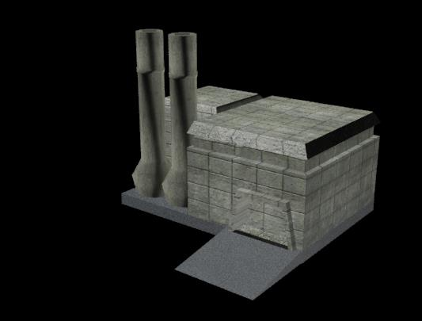
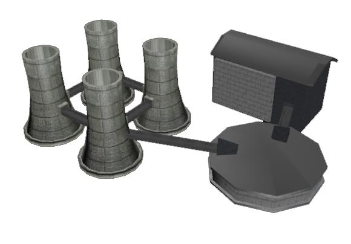
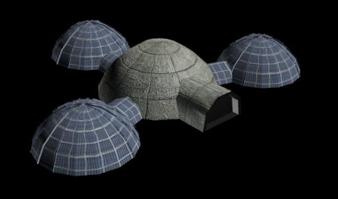
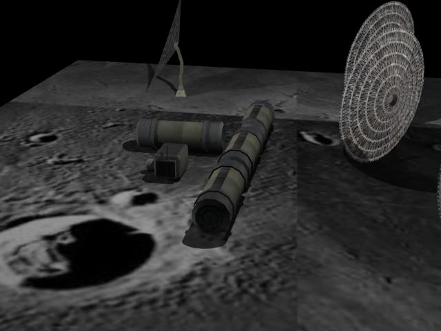
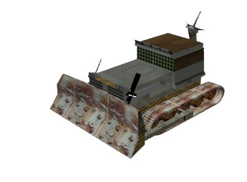
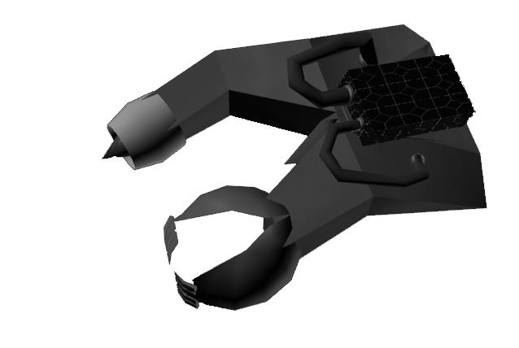
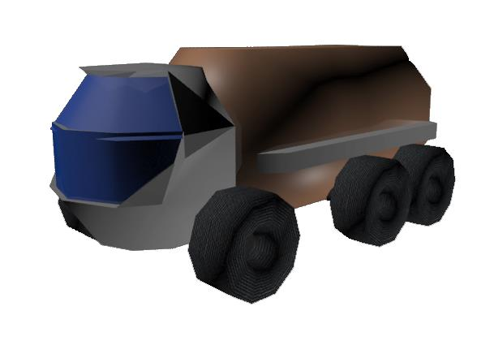
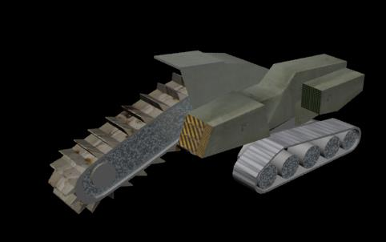

Documentation
Introduction
This project is part of NASA Space Apps Challenge 2013. It's solving the Bootstrapping of Space Industry challenge.
The concept of establishing a presence on the Moon in some form is elusive to many people, but not for our team.
We develop a 3D simulation game of a lunar industry through a series of "bootstrapping" stages until it becomes self-sustaining. The strategy is to decide which machines and buildings to build first and how many of them, using resources launched from Earth and available from the Moon. A major part of our game is learning what the purpose of space technologies are and could be.
The industry consists of a set of devices equivalent to the "Global Village Construction Set" but adapted to lunar industry (no humans present in the early stages; just robots). Players get to launch an initial set of machines to the Moon, choosing from a set of available devices…
Project URL
http://spaceappschallenge.org/project/moonville/
CodePlex
https://moonville.codeplex.com/
GitHub
Buildings, units and resources documentation
ID 1 - Colony Control Center
Colony Control Center (CCC) is the main building in our moon colony, built from initial materials brought from the Earth. It provides the necessary equipment to communicate with Earth and with all the units within the colony. Every command from the Earth is send to the CCC where all the information is being proceeded and analyzed. The database with information about all resources in the colony, built devices and buildings is stored in the Control Center and when a new building or device has to be build, CCC searches for available units that can be used in the process.
CCC also has a landing platform with infrastructure allowing easy deploying of materials brought from Earth.
Only one Control Center is allowed in a colony.
Resources and devices needed:
- 1t metal
- *other resources
- Transmission center
- Main server
- 5000 robot hours
ID 2 - Unit Factory
The Unit Factory (UF) is responsible for building new parts and assembling devices essential for the colony expansion. You are allowed to configure a set of initial devices that will be used in the Unit Factory.
The Unit Factory have an important role in the colony and you will need more than one to ensure the growth of your industry. Every UF should be used to do specific tasks.
3D printers, Robotic arms and many other devices will be available in the UF.
Resources and devices needed:
- 0.5t metal
- 1400 robot hours
ID 3 - Refinery
Refinery is a production facility composed of a group of chemical engineering unit processes and unit operations refining certain materials or converting raw material into products of value.
The main raw material that the moon refinery uses is the regolith which is delivered from the regolith mine.
The refinery is a crucial part of the moon colony and is the heart of production process.
Resources and devices needed:
- 1t metal
- Chemicals
- 6000 robot hours
ID 4 - Regolith mine
The Regolith mine is a structure where all Miners are distributing the extracted regolith and where the raw material is prepared for transportation to the Refinery. The Regolith mine and the Refinery are linked with rails, allowing easy and efficient way to transport the material.
The moon's surface is very powdery due to millions of years of micrometeorite impacts and no active geology. Mining of the powder does not require heavy Earth moving machinery because of this and because of the 1/6th gravity, it is ideal for cheap mining and mineral processing.
Resources and devices needed:
- 0.5t metal
- 1000 robot hours
ID 5 - Silo
The Silo is the storage building in the moon colony. It provides safe environment for the produced materials from refineries and the factories.
The Silo is made with blocks from heat treated regolith and its roof is covered with solar panels, providing protection from the sun radiation while generating enough energy for the devices in it.
Resources and devices needed:
- 0.4t metal
- 2500 robot hours
ID 6 - Solar panels
Solar panels use light energy (photons) from the sun to generate electricity through the photovoltaic effect. The majority of modules use wafer-based crystalline silicon cells or thin-film cells based on cadmium telluride or silicon.
A solar panel (also solar module, photovoltaic module or photovoltaic panel) is a packaged, connected assembly of photovoltaic cells. The solar panel can be used as a component of a larger photovoltaic system to generate and supply electricity. Each panel is rated by its DC output power under standard test conditions, and typically ranges from 100 to 320 watts. Because a single solar panel can produce only a limited amount of power, most installations contain multiple panels. A photovoltaic system typically includes an array of solar panels, an inverter, and sometimes a battery and or solar tracker and interconnection wiring.
Resources and devices needed:
All materials are found in the regolith
- Silicon
- Iron
- Titanium Oxide
- Calcium
- Aluminum
Devices
Bulldozer
Builder robot
Collector truck
Deliver resources between the mine and the refinery or between the silo and the newly created building
Miner
Deliver resources between the mine and the refinery or between the silo and the newly created building